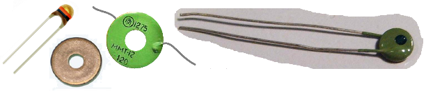
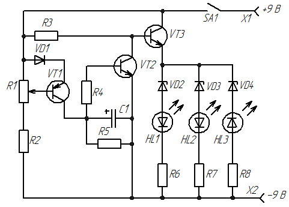
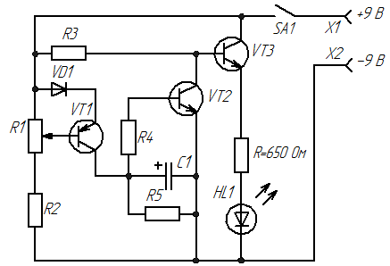
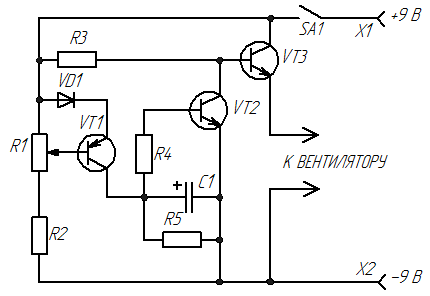

Трехуровневый датчик температуры
Это устройство можно использовать по разному: например позволит контролировать режим работы микросхемы или мощного элемента в электрических схемах.
В качестве термочувствительных элементов (датчиков) могут использоваться:
- терморезисторы;
- полупроводниковые диоды.
Терморезистор - это полупроводниковый резистор, в котором используется зависимость электрического сопротивления полупроводникового материала от температуры.
Основными параметрами терморезистора являются:
- номинальное сопротивление,
- температурный коэффициент сопротивления (ТКС),
- интервал рабочих температур,
- максимально допустимая мощность рассеяния.

Рис. 1 - Терморезисторы
В целом он представляет собой довольно простое устройство, которое способно работать в разных климатических условиях, стойкий к механическим нагрузкам.
Терморезисторы изготавливают в виде стержней, трубок, дисков, шайб, бусинок и тонких пластинок. Их размеры обычно составляют от нескольких микрометров до двух сантиметров.
В качестве термочувствительного элемента также может быть использован полупроводниковый диод, электрическая проводимость которого растет с увеличением температуры. Стоит отметить тот факт, что чувствительность к изменению температуры у германиевых диодов выше, чем у кремниевых. Поэтому кремниевые лучше использовать там, где необходимо измерять большие температуры.
На рис. 2 представлена схема трехуровневого датчика температуры, где в качестве термочувствительного элемента использован полупроводниковый диод.

Рис. 2 - Схема трехуровневого датчика температуры
Таблица 1
| Обозначение | Наименование | Номинал | Кол-во | Примечание |
|---|---|---|---|---|
| C1 | Конденсатор | 47 мкФ / 16В | 1 | |
| GB1 | Гальванический элемент | 9 В | 1 | Батарея «Крона» |
| R1 | Резистор переменный | 10 кОм | 1 | |
| R2, R5 | Резистор постоянный | 10 кОм / 0,25 Вт | 2 | |
| R3 | Резистор постоянный | 3 кОм / 0,25 Вт | 1 | |
| R4 | Резистор постоянный | 1 кОм / 0,25 Вт | 1 | |
| R6 | Резистор постоянный | 100 Ом / 0,25 Вт | 1 | |
| R7 | Резистор постоянный | 50 Ом / 0,25 Вт | 1 | |
| R8 | Резистор постоянный | 10 Ом / 0,25 Вт | 1 | |
| HL1-HL3 | Светодиод | АЛ307 | 3 | 2...3 В, 10...20 мА |
| SA1 | Выключатель | П2К | 1 | с фиксацией |
| VD1 | Диод | КД521Б | 1 | |
| VD2-VD4 | Стабилитрон | КС156А | 3 | 5,.6 В / 0,5 Вт |
| VT1 | Транзистор биполярный | КТ361Б | 1 | С любым буквенным индексом |
| VT2, VT3 | Транзистор биполярный | КТ315 | 2 | С любым буквенным индексом |
Датчиком температуры является кремниевый диод VD1. Переменным резистором R1 задают ток этого диода так, чтобы при комнатной температуре горели светодиоды HL1 и HL2 (лучше использовать голубой и желтый соответственно). После этого, если нагреть диод, его сопротивление упадет, и увеличится ток на коллекторе транзистора VT1. Вследствие этого возрастет ток, входящий на базу транзистора VT2 и он закроется. В этот момент начинает открываться транзистор VT3 зажигая светодиоды HL1, HL2, HL3. Светодиоды загораются друг за другом таким образом, что при комнатной температуре горят HL1 и HL2, а когда температура повышается, то включается HL3 красного цвета. При температуре окружающей среды меньше комнатной, будет гореть только светодиод HL1. Помните, что транзистор VT1 тоже немного чувствителен к температуре. Его нагрев может усилить яркость светодиодов. Не перепутайте полярность светодиода HL3, должно быть как на схеме.
В схеме использованы стабилитроны (диоды Зеннера) VD2-VD4 на 5,6 В, без них светодиоды будут гореть одновременно. Резисторы R6, R7, R8 подобраны так, чтобы для каждого светодиода обеспечить личный диапазон индикации температуры.
Можно упростить схему, используя лишь один светодиод (рис. 3). В этом случае измеряемая температура наблюдается по изменению яркости свечения светодиода.

Рис. 3 - Схема датчика температуры с одним диодом
Это устройство может работать в паре с охлаждающим вентилятором, изменяя скорость его вращения (рис. 4).

Рис. 4 - Схема датчика температуры с вентилятором